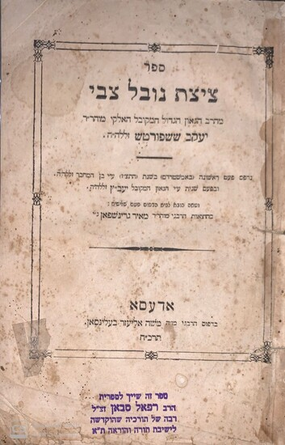

Rav Yakov Sasportas
1610-1698
Biography
Rav Yakov Sasportas was born into a wealthy family of Spanish Jews who had fled to North Africa during the Spanish expulsion. In Oran (Algeria), he became widely known for his talmudic erudition. He was a direct descendent of the Ramban. He made a siyum hashas when he was only twelve years old. When he was eightteen years old he became av beis din in Tlemcen in Morocco where he stayed for twenty years.
When he was thirtyseven years old he was dismissed by the government; he then proceeded to wander throughout Europe, visiting many communities in Germany, Italy, and England. He was offered the position of Chacham of the sefardi community in London in 1664 but left the next year because of the plague. His main ambition was the rabbinate of Amsterdam, but he did not achieve it until 1693, when he was eightythree years old.
He was a staunch defender of traditional haloche and throughout his life he was involved in polemical disputes. Many of his tshuves were collected in the sefer Ohel Yakov (Amsterdam 1737), published by his son Abraham.
Rav Yakov Sasportas was largely known for his collection of letters, Tzitzas Novel Tzvi, comprising his answers to various Shabbatean letters and pamphlets, as well as the original pamphlets themselves (later, Rav Yakov Emden wrote the Kitzur Tzizas Novel Tzvi). At the time of the dispute around Shabbetai Tzvi, Rav Yakov lived in Hamburg (Germany). He led the battle against Shabbetai Tzvi fiercely at his own personal expense.
In his writings he pointed out in great detail the differences between what was happening at that time and the traditional ideas concerning the messianic era. He frequently compared the new movement with Christianity and feared that the Shabbateans would follow the ancient example. He perhaps single-handedly saved countless people from joining the deviant movement. While he was not the only one to resist the shabbatean movement, he has become the symbol of the resistance.
Rav Yakov was a friend of Menashe ben Yisroel and accompanied him on his mission to Cromwell in England (see Menashe ben Yisroel).
Major Works
Ohel Yakov (Amsterdam 1737) – A collection of responsa, published by his son Abraham.
Tzitzas Novel Tzvi – A compilation of letters and pamphlets documenting his fierce opposition to the Shabbatean movement.

Visiting the Kever
Rav Yakov Sasportas is buried in the Portuguese Jewish Cemetery (Beth Haim) in Ouderkerk aan de Amstel.